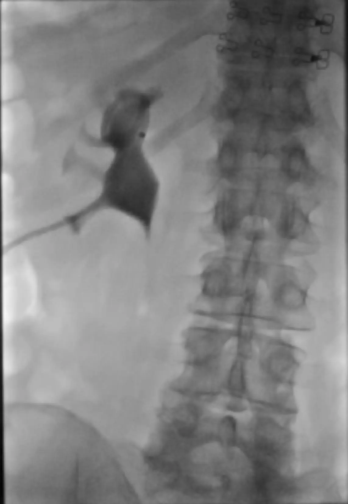
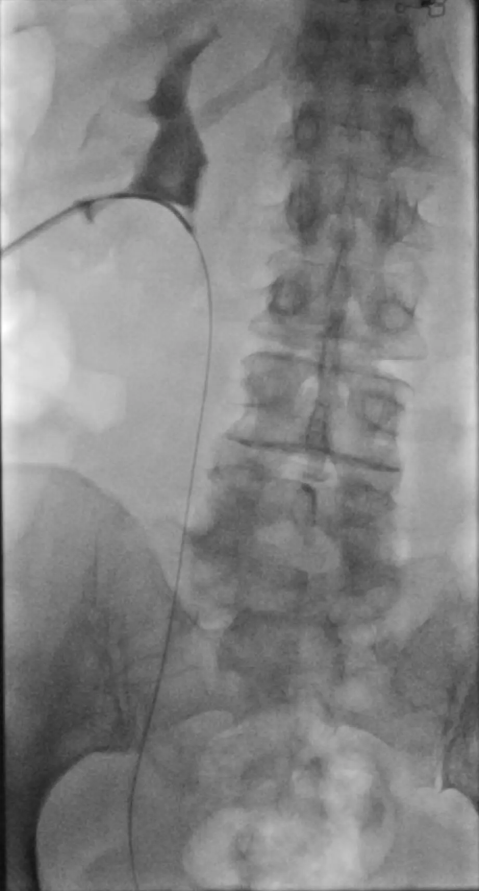
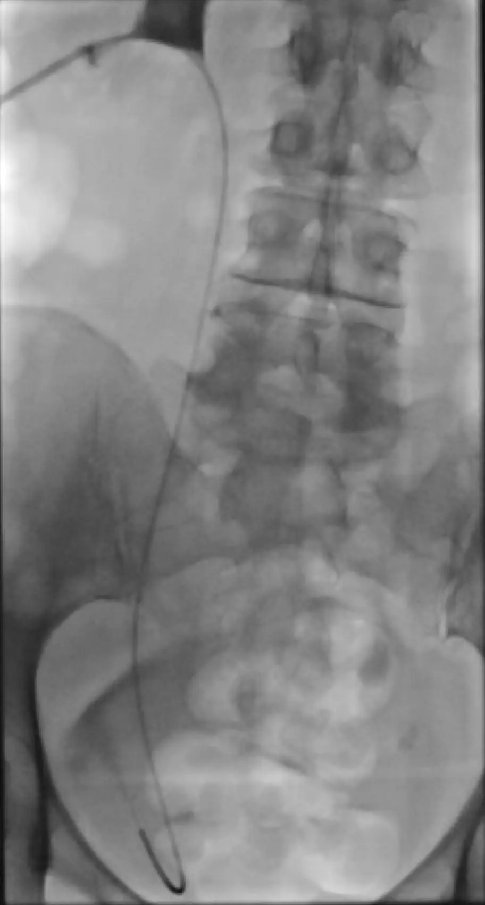
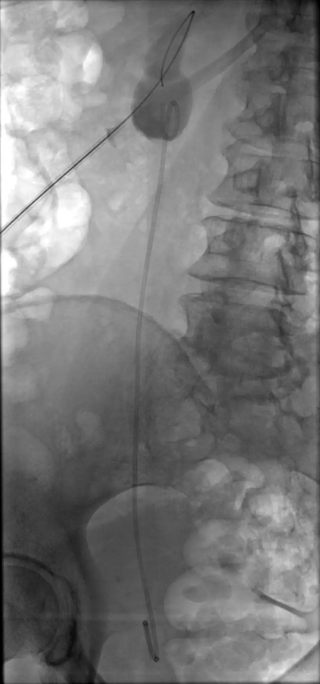

Antegrade Plaatsing JJ-katheter
Antegrade plaatsing van een dubbel-J ureterstent via percutane nefrostomietoegang
Indicaties & Contra-indicaties
▾
Indicaties
- Ureterobstructie — maligne compressie, stricturen of stenen
- Interne drainage als alternatief voor of na nefrostomie
- Ureterlekkage of -fistel — overbrugging van het defect
- Mislukte retrograde plaatsing via cystoscopie
- Conversie van bestaande nefrostomiedrain naar interne drainage
Contra-indicaties
- INR >1.5 / trombocyten <50
- Actieve onbehandelde urineweginfectie / urosepsis (eerst draineren)
- Niet-passeerbare ureterobstructie (relatief — nefrostomie in situ laten)
Pre-procedurele Checklist
▾
- Lab: INR, trombocyten, eGFR, CRP
- Beeldvorming: Niveau en lengte obstructie beoordelen op CT-urografie of antegrade pyelografie
- Toegang: Bestaande nefrostomiedrain aanwezig? Zo niet: eerst nefrostomie plaatsen
- Stentmaat: Lengte 22–28 cm op basis van patiëntlengte of gemeten ureterlengte. Diameter standaard 6–7 Fr
- Antibiotica: Ceftriaxon iv 2000 mg eenmalig. Bij geïnfecteerde urine: behandelen conform protocol
- Informed consent: Mislukte passage met nefrostomie als terugvaloptie, bloeding, infectie, stentmigratie
Materiaal
▾
| Materiaal | Specificatie | Aantal |
|---|
Stappenplan
▾
Voorbereiding
- 1Patiënt in buikligging. Steriele omstandigheden. Deze procedure gaat uit van een reeds in situ zijnde nefrodrain; is die er niet, plaats dan eerst een nefrostomie — zie Percutane nefrostomie.
- 2In situ zijnde nefrodrain en omgeving poetsen en steriel afdekken.
- 3JJ-stent voorbereiden: trek de kruldraden door de stent en verwijder ze. Deze worden niet gebruikt en kunnen blijven haken aan een aansluitend te plaatsen nefrodrain. Kies en prepareer tevens de sheath: 7Fr, kort bij een slanke patiënt en lang bij een langer traject bij een grotere patiënt — zet deze in elkaar en flush hem.
Procedure
- 4Via de bestaande nefrodrain antegrade pyelografie uitvoeren ter beoordeling van het verzamelsysteem, het niveau van de obstructie en de positie van de krul. foto
- 5Amplatz voerdraad (180 cm) opvoeren via de nefrodrain. Idealiter ligt de tip van de Amplatz in de ureter; lukt dat niet, zorg dan tenminste dat het stijve deel van de draad in het pyelum ligt.
- 6Over de Amplatz de nefrodrain verwijderen en de sheath inbrengen.
- 7Door de sheath met een Cobra katheter en Terumo voerdraad de ureter vervolgen tot in de blaas. foto
- 8Terumo verwijderen en de intravesicale positie van de katheter bevestigen. Vervolgens de Amplatz door deze katheter opvoeren tot in de blaas. foto
- 9JJ-stent over de Amplatz voerdraad opvoeren via de sheath met de pusher. Controleer vóór verder opvoeren dat de proximale röntgenmarker van de stent in het verzamelsysteem ligt — later dieper opvoeren is lastig.
- 10Pusher op zijn plaats houden en de Amplatz draad langzaam terugtrekken — de distale krul vormt zich spontaan in de blaas.
- 11Trek de Amplatz terug tot net in de sheath en breng de pusher al draaiend dieper in om de proximale krul te vormen in het pyelum. Let op de sheath: te diep → krul vormt zich niet; te ondiep → sheath valt buiten de nier. Klik de JJ-katheter los van de pusher en verwijder de pusher. Leg direct daarna de Amplatz voerdraad terug in het pyelum als safety wire.
- 12Definitieve positie controleren onder doorlichting: distale krul in de blaas, proximale krul in het pyelum. foto
- 13<strong>Optioneel:</strong> alleen bij een bloederige procedure of bij twijfel over een goede positie: over de Amplatz een nefrodrain plaatsen (8.5 Fr multipurpose of Dawson-Muller) als veiligheidsdrain naast de JJ.
Aandachtspunten
Kruldraden verwijderen: Trek de kruldraden vóór plaatsing door de stent en verwijder ze. Ze worden niet gebruikt en kunnen blijven haken aan een aansluitend te plaatsen nefrodrain.
Proximale marker controleren: Controleer vóór het terugtrekken van de Amplatz dat de proximale marker in het verzamelsysteem ligt. Later dieper opvoeren van de stent is vaak niet meer mogelijk.
Sheath positie: Sheath te diep → krul kan zich niet vormen. Sheath te ondiep → sheath valt buiten de nier en toegang gaat verloren. Houd de sheath net in het pyelum.
Safety wire behouden: Leg na het losklikken van de JJ de Amplatz direct terug in het pyelum. Zo behoud je toegang tot het verzamelsysteem mocht er alsnog een nefrodrain geplaatst of geherpositioneerd moeten worden. Let op: de JJ zelf kun je na loslaten niet meer herpositioneren.
Stentlengte: Vuistregel: patiëntlengte bepaalt de maat — klein 22 cm, gemiddeld 24–26 cm, lang 28 cm. Te kort → migratie; te lang → blaasirritatie.
Afbeeldingen
▾

Antegrade pyelografie via de nefrodrain

Amplatz voerdraad opgevoerd, tip richting ureter

Draad afdalend door de ureter tot in de blaas

JJ-stent in situ: krul in pyelum en in de blaas
Complicaties
▾
| Complicatie | Kans | Management |
|---|---|---|
| Urosepsis | 1–4% | IV antibiotica, vochttoediening; veiligheidsnefrostomie open zetten |
| Hematurie | 5–10% | Meestal zelflimiterend; ruim drinken |
| Mislukte passage obstructie | 5–15% | Nefrostomiedrain achterlaten als externe drainage; herhaling of retrograde poging |
| Stentmigratie | 2–5% | Repositioneren of vervangen; juiste stentlengte kiezen |
| Stentobstructie / encrustatie | Bij langdurig verblijf | Tijdige wissel elke 3–6 maanden |
| Blaasirritatie | Frequent | Anticholinergica; stentlengte controleren |
Nazorg
▾
- Veiligheidsnefrostomie: na 24–48u afdoppen; bij goede JJ-functie en heldere urine verwijderen
- JJ-stent wisselen elke 3–6 maanden ter voorkoming van encrustatie
- Patiënt informeren: blaasirritatie en milde hematurie zijn verwachte bijwerkingen
- Bij koorts, flankpijn of forse hematurie: laagdrempelig contact opnemen
- Follow-up via urologie; ruim drinken ter preventie van encrustatie
Standaardverslag
▾
Ter vergelijking: [datum/modaliteit]
Antistolling: [gestaakt / niet van toepassing]
Indicatie: ureterobstructie [links/rechts] bij [oorzaak].
Steriele omstandigheden. Antegrade pyelografie via de bestaande
nefrodrain toont [bevinding verzamelsysteem] met obstructie ter
hoogte van [niveau].
Via de nefrodrain Amplatz voerdraad (180 cm) opgevoerd, met de tip
[in de ureter / met het stijve deel in het pyelum]. Over de Amplatz
de nefrodrain verwijderd en 7 Fr sheath ingebracht.
Via de sheath met Cobra katheter en Terumo voerdraad de ureter
vervolgd tot in de blaas. Terumo verwijderd; intravesicale positie
van de katheter bevestigd met contrast. Amplatz via de katheter
opgevoerd tot in de blaas.
JJ-stent [maat] Fr, [lengte] cm opgevoerd via de sheath over de
Amplatz. Distale krul gevormd in de blaas en proximale krul in het
pyelum.
[Optioneel: over de Amplatz een [maat] Fr [multipurpose /
Dawson-Muller] drain geplaatst als veiligheidsnefrodrain.]
Controle doorlichting toont goede positie: distale krul in de blaas,
proximale krul in het pyelum.
Conclusie:
Antegrade plaatsing JJ-katheter [links/rechts].
[Veiligheidsnefrodrain achtergelaten.]
Nazorg:
[Veiligheidsdrain na 24-48u afdoppen. Bij goede JJ-functie en heldere
urine verwijderen.] Stentwissel na 3-6 maanden. Follow-up via urologie.
Bronnen & Externe Links
▾